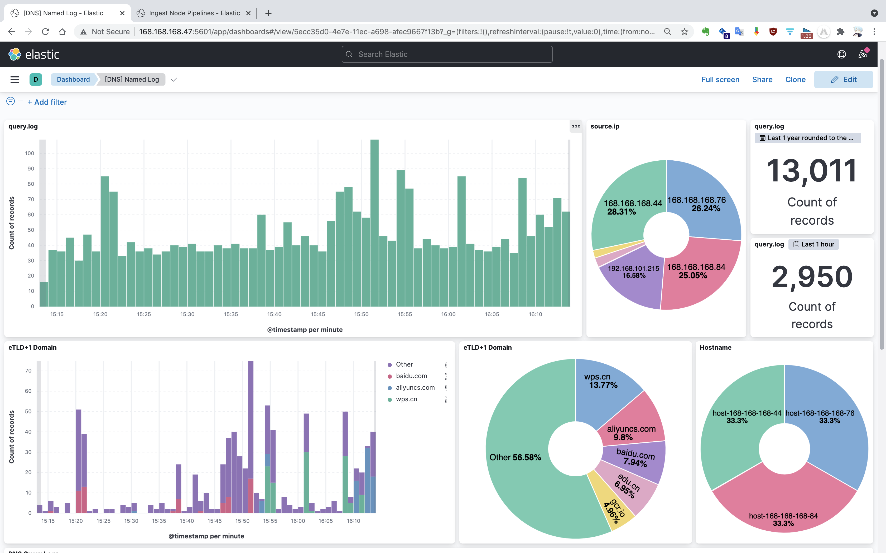
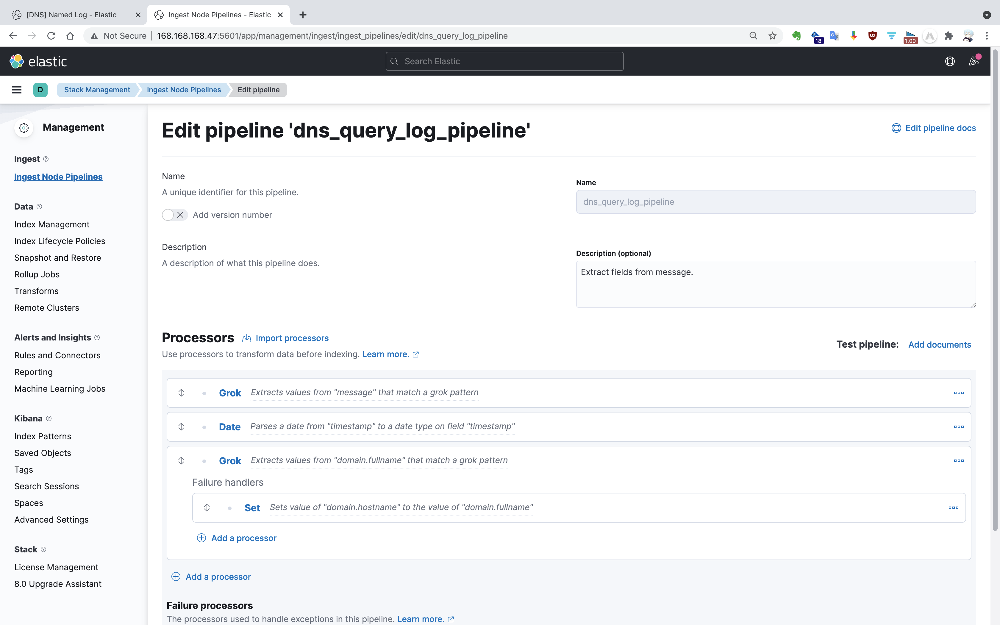
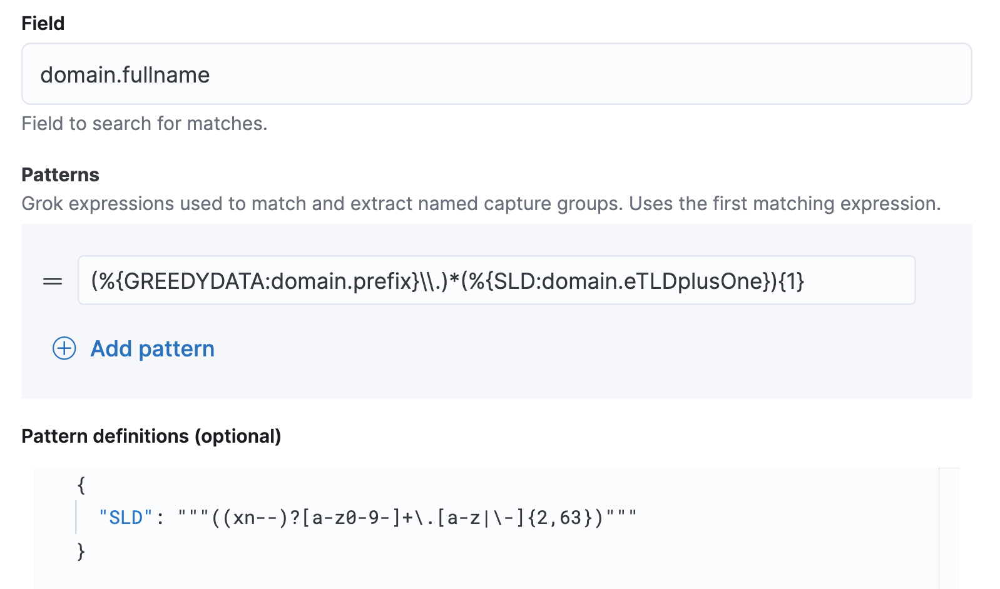
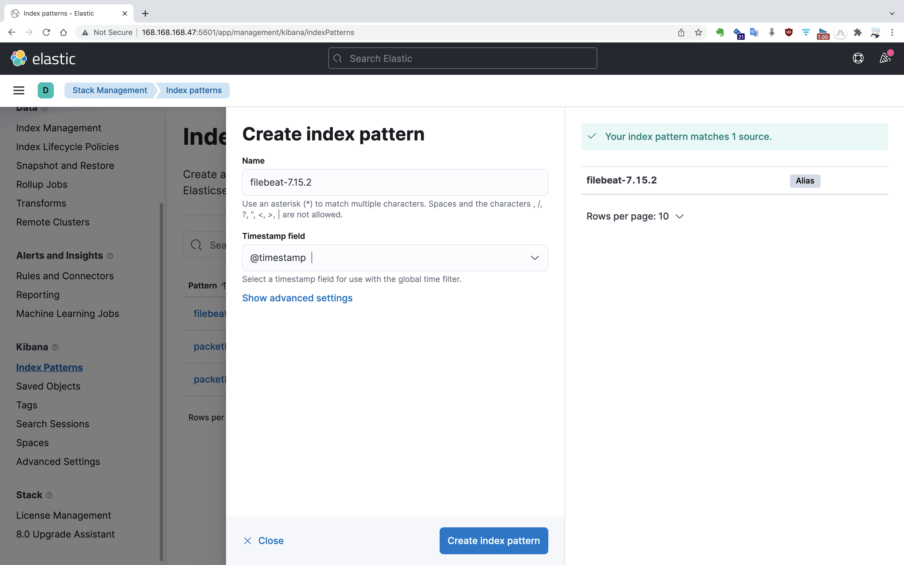
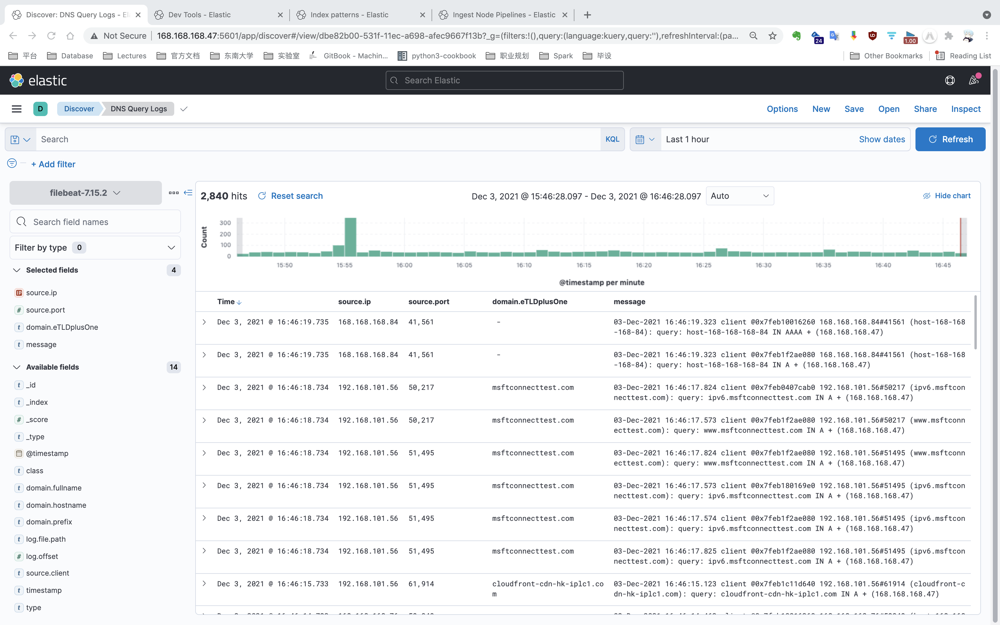
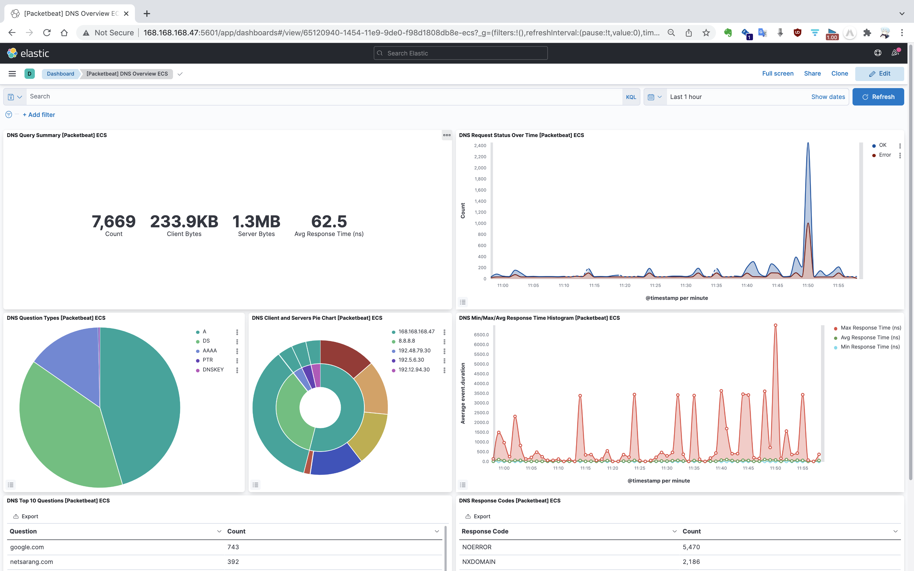
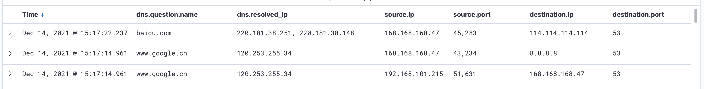

前言
前期工作：基于 Bind9 搭建内网 DNS 服务器，使得在 /etc/resolv.conf 中配置了该服务器 IP 的节点或终端的 DNS 流量都会流经该服务器，为集群 DNS 流量采集提供了先决基础。同时，初步使用日志记录 DNS 查询请求（配置在 /etc/named.conf 中），后续可采用 Packetbeat/TShark 等工具主动捕获。DNS 查询日志内容格式如下：
1 | 30-Nov-2021 08:57:25.192 client @0x7f74f800b650 192.168.101.145#61323 (apisix.apache.org): query: apisix.apache.org IN A + (168.168.168.47) |
为了推进后续的 DNS 流量分类研究工作，本文介绍了如何基于现有的 DNS 流量日志，使用 Elasticsearch 和 Kibana 搭建流量监测可视化平台。本文包含以下内容：
- 使用 Filebeat 将流量日志实时同步到 Elasticsearch；
- 使用 Grok 正则过滤器对采集到的日志消息二次处理；
- 使用网络数据包分析工具 Packetbeat。
将日志文件转储到 Elasticsearch，一是作为历史归档考量，Bind9 日志存在存储时限，如果文件大小达到设置的上限，旧的日志文件会被循环覆盖。二是 JSON 格式易于拓展，支持嵌套和数组，且易于特征提取阶段 Python 进行处理。三是可视化支持好，在 Elasticsearch 数据集上，使用 Kibana 可以快速建立指标分析、图表分析以及时间序列分析等可视化。下图是基于 DNS 查询日志配置的 Kibana Dashboard 可视化界面。

实验环境
- 操作系统 CentOS 7.9；
- Docker，版本 19.03.13；
- Elastic Stack 工具集，版本 7.15.2。包括 Elasticsearch、Kibana、Filebeat 和 Packetbeat。
部署 Elasticsearch + Kibana
使用 Docker 快速部署 Elasticsearch 与 Kibana 环境。首先，拉取 Docker 镜像：
1 | $ docker pull docker.elastic.co/elasticsearch/elasticsearch:7.15.2 |
需先以单点模式运行 Elasticsearch 容器，然后再启动 Kibana 容器。
1 | $ docker run --name es01-test --net elastic -p 9200:9200 -p 9300:9300 -e "discovery.type=single-node" docker.elastic.co/elasticsearch/elasticsearch:7.15.2 |
成功启动容器后，可在 5601 端口访问 Kibana 首页。
使用 Filebeat 监听日志文件变更
Filebeat 是 Elastic/Beats 数据采集器工具集中的一员，负责日志采集，相比于运行在 JVM 上的 Logstash，它更加轻量级。Filebeat 能够实时捕获文件的新增内容（类似 tail -f 命令），按行将新增内容转发到 Elasticsearch 或 Logstash 中存储，并记录文件当前偏移量，以便中断后下次启动从中断点继续开始。
下载、解压 Filebeat 安装包并重命名。
1 | $ wget https://artifacts.elastic.co/downloads/beats/filebeat/filebeat-7.15.2-linux-x86_64.tar.gz |
Filebeat 安装目录中，包含启动脚本以及默认配置文件 filebeat.yml。
1 | $ cd filebeat |
按照 filebeat.yml 文件格式，编写自定义配置文件 named.yml。在配置文件中，设置日志输入源为 Bind9 生成的 query.log；去除了 Filebeat 生成的冗余字段（可选）；设置了写入的 Elasticsearch 的 URL 以及索引分片数。
1 | filebeat.inputs: |
默认情况下，Filebeat 写入 Elasticsearch 的索引名形如 filebeat-%{[beat.version]}-%{+yyyy.MM.dd}。此项配置在 output.elasticsearch.index 中，Filebeat 会自动创建索引别名，如 filebeat-7.15.2。
运行 Filebeat，参数 -c 指定配置文件 named.yml，-e 将错误日志输出到控制台。
1 | $ ./filebeat -e -c named.yml |
注：使用 nohup 和 & 命令可以后台运行，并且输入 exit 退出命令行终端后依然不会停止（直接关闭命令行终端会停止）。
从 Filebeat 发往 Elasticsearch 的日志消息，包装在 message 字段中，除此之外，还有一些 Filebeat 生成的记录字段。一条日志信息转化后的格式如下：
1 | { |
对于原始的 message 字段，能够提供的信息有限，因此需要对消息字段加以处理。Logstash 的插件 Grok 正则过滤器提供对字符串的解析功能。如今，Elastic 提供了 Ingest Node 功能，允许在文档写入 Elasticsearch 索引之前经过预处理，并提供了对 Grok 的集成。
使用 Grok 正则处理日志消息
在 Kibana 的 “Stack Management | Ingest Node Pipelines” 界面，可以指定一系列的处理器 （Processors）对消息进行流水线处理，包括定义异常处理分支。

对于 query.log 文件中的日志记录，由于日志格式固定，因此可以使用 Grok 对一条记录进行匹配。正则表达式格式如 %{IP:source.ip}，冒号左侧为 Grok 默认 Pattern，冒号右侧为存储的 JSON 字段名，支持嵌套结构。解析日志的 Grok 正则表达式如下：
1 | 23-Nov-2021 13:58:03.222 client @0x7f7034054680 168.168.168.47#56504 (baidu.com): query: baidu.com IN A + (168.168.168.47) |
此外，还可以自定义 Grok Pattern。例如，对于域名字段来说，其“二级域名 + 顶级域名”构成的域名后缀（即用户可以在域名注册网站购买的域名）可能具有重要分析意义。为此，定义了名为 SLD 的 Grok Pattern，将其解析成 domain.eTLDplusOne 字段（有效顶级域名 + 1，名称借鉴自 Packetbeat）。

注：正则表达式中的反义字符由于要表示在 JSON 文档中，所以需要额外一个下划线，如 \\.。
可以在 “Stack Management | Ingest Node Pipelines” 界面添加测试文档测试流水线是否正常工作，这对于验证正则表达式正确性有巨大帮助。此外，还能够在 Dev Tools 的 Grok Debugger 控制台中调试正则表达式。
实际上，在 Kibana 界面添加 Pipeline 相当于在 Elasticsearch 的 /_ingest/pipeline 索引中添加了如下的一条文档：
1 | { |
为了使该 Pipeline 生效，还需要在 Filebeat 的配置文件中添加此项配置，并重启 Filebeat 程序。
1 | output.elasticsearch: |
Kibana 可视化
要在 Kibana 查看 Elasticsearch 中存储的数据，首先需要在 “Stack Management | Index patterns” 中配置索引模式（Index pattern）。

创建完成后，可以在 “Discover” 界面查看索引中存放的数据。

还可以在 “Dashboard” 界面自定义可视化看板，效果图如前言中所示。
使用 Packetbeat 监听数据包
除了使用 Filebeat + Grok 手动解析日志文件之外，Beats 工具集还提供了专用于网络数据包分析的轻量型工具 Packetbeat，它能够捕获由 ping 工具发起的 ICMP 报文（网络层），或者通过端口捕获应用层报文，如 HTTP 80 端口、MySQL 3306 端口等。捕获的报文可被解析成 JSON 格式存储到 Elasticsearch。
下载、解压 Packetbeat 安装包，并重命名。
1 | $ curl -L -O https://artifacts.elastic.co/downloads/beats/packetbeat/packetbeat-7.15.2-linux-x86_64.tar.gz |
Packetbeat 的配置文件模版位于 packetbeat.yml 中，我们需要自定义 DNS 配置文件 dns.yml。除了以 packetbeat. 开头的特定配置外，其他配置与 Filebeat 共用一套模版。
1 | packetbeat.interfaces.device: eth0 |
运行 Packetbeat，参数 -c 指定配置文件 named.yml，-e 将错误日志输出到控制台。
1 | ./packetbeat -e -c dns.yml |
启动 Packetbeat 后，捕获的数据被发送至 Elasticsearch，在 “Stack Management | Index patterns” 中配置索引模式后，就可以访问以 packetbeat-7.15.2 别名命名的索引中的数据。
此外，Packetbeat 还提供了一些可视化的 Kibana Dashboard 模版，通过如下命令初始化：
1 | ./packetbeat setup --dashboards |
Dashboard 效果图如下。

总结
值得注意的是，Packetbeat 监听的是目的端口为 53 的数据包。不管是下面哪种 DNS 报文，Packetbeat 都能进行捕获。
- 内网中访问内网 DNS 服务器的其他终端，如 192.168.101.215 -> 168.168.168.47（内网 DNS 服务器）；
- 内网 DNS 服务器转发的 DNS 查询，如 168.168.168.47 -> 8.8.8.8（谷歌 DNS 服务器，可在 Bind9 配置文件中定义转发规则）；
- 甚至是手动指定 DNS 服务器的查询报文，如
dig @114.114.114.114 baidu.com。

相比之下，使用日志记录 DNS 查询请求的方式就显得十分局限了。即使内网中的用户在 /etc/resolv.conf 中配置了内网 DNS 服务器，也不能保证恶意软件乖乖的使用该 DNS 服务器。因此理论上，只有在内网所有终端上部署类似 Packetbeat 的数据包探测器（类似的还有 Wireshark 的底层库工具 tshark），才能真正全量的监听 DNS 流量。此外，Packetbeat 解析出的 JSON 结构的数据所包含的信息要远大于通过正则分析的日志信息。
因此对于端口固定的数据包探测，Packetbeat 的实用性要优于 Filebeat + Grok 的方案。但 Filebeat 适用范围更广，任何有生成日志的程序，甚至是批/流处理产生的中间数据文件，理论上都能通过 Filebeat 采集特征存入 Elasticsearch 进行后续分析。